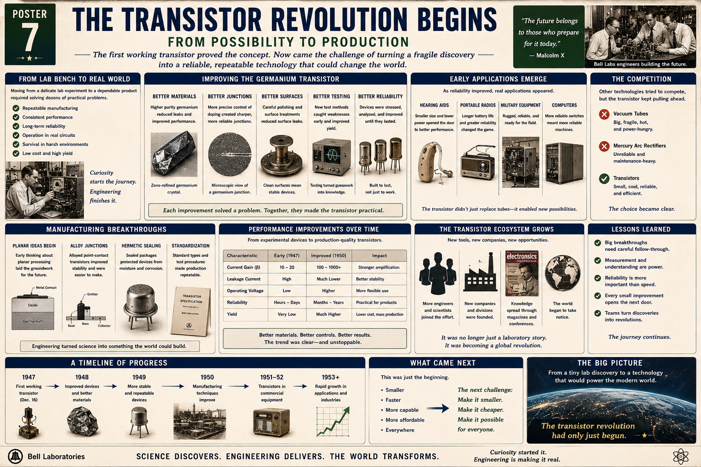

Repeatable manufacturing
One successful device was not enough. The process had to produce many devices with similar behavior.
Poster 7 · From Possibility to Production
A lesson for Klins on the moment when the transistor stopped being just a laboratory victory and started becoming a production technology. This is the bridge between proof and adoption: better materials, better junctions, better testing, better reliability, and the first wave of real-world use.

The transistor had to become something industry could build and trust.
One successful device was not enough. The process had to produce many devices with similar behavior.
Gain, leakage, voltage handling, and lifetime all needed to fall within usable ranges.
A transistor had to keep working in real equipment, not just during a controlled demonstration.
Designers needed enough predictability to bias the transistor, couple it to loads, and build products around it.
Heat, vibration, transport, moisture, and handling all mattered once the transistor left the lab.
For a technology to spread, enough good devices had to come off the line at an affordable price.
Each improvement attacked a real weakness in the early devices.
Cleaner material reduced unwanted effects and made transistor behavior more predictable.
Improved doping and junction formation increased stability and gain.
Surface leaks and contamination were reduced by better preparation and handling.
New test methods turned trial-and-error into measurable engineering knowledge.
Devices were analyzed, stressed, and improved until they could survive actual service.
No single refinement caused the transistor revolution by itself. The breakthrough came from many improvements working together. Better crystals, cleaner surfaces, more consistent junctions, and better measurement all reinforced each other.
Engineering turned science into something the world could build.
Early thinking about more controlled, layered device geometry pointed toward the future of scalable fabrication.
Alloyed point-contact and junction methods produced more stable and easier-to-make devices.
Protected packages helped keep moisture and corrosion from ruining the device.
Standard device types, test procedures, and published specifications made production repeatable.
Production-quality transistors were much better than the earliest experimental parts.
Early devices had modest gain. Improved devices offered stronger amplification and broader usefulness.
Lower leakage meant better stability, less wasted power, and more dependable switching.
Devices became usable in a wider range of circuits and supplies.
Life expectancy moved from hours or days toward months and years.
More good devices per batch meant lower cost and broader adoption.
Each production run taught engineers something about what made devices succeed or fail.
As reliability improved, the transistor stopped being a curiosity and started solving real problems.
Transistors opened the door to better portable amplification for everyday life.
Low-power operation made truly portable consumer electronics practical.
Reliable solid-state devices suited harsh conditions better than fragile vacuum tubes.
Even before large-scale replacement, the transistor pointed toward computers that were smaller, cooler, and more dependable.
Other technologies remained in use, but the transistor’s advantages became increasingly clear.
Powerful and well-established, but still big, fragile, hot, and power-hungry.
Useful in certain systems, but maintenance-heavy and unsuitable for many new miniaturized applications.
Small, cool, efficient, and increasingly reliable. The direction of progress was obvious.
Success attracted more people, more companies, and more momentum.
A larger workforce accelerated refinement, testing, and application development.
Industrial competition spread the technology beyond one laboratory.
Magazines, conferences, and technical papers carried transistor ideas into the wider engineering community.
The transistor was becoming not just a component, but a platform for an entire technological era.
The poster’s summary ideas are worth turning into principles.
Discovery starts the story. Careful refinement decides whether the story changes the world.
Test equipment turned opinions into evidence and made improvement possible.
A mediocre device that always works can be more valuable than a brilliant device that cannot be trusted.
Each reduction in leakage, increase in yield, or improvement in packaging expanded the technology’s reach.
Scientists, process engineers, technicians, managers, and manufacturers all contributed to the transistor’s rise.
Poster 7 is a midpoint, not an ending. Once the transistor entered production, the next challenge was scale.
Your own projects live on the same path from possibility to production.
When you first make a transistor switch a relay or drive a load, you have proven a concept.
When you document wiring, resistor values, pin assignments, and expected voltages, you begin turning the circuit into a repeatable design.
Cleaner breadboard layout, solid jumper connections, known-good components, and sensible grounding improve success just as better materials improved early transistors.
Using a meter to verify base-emitter voltage, collector-emitter voltage, and load current is your version of process control.
Flyback diodes, correct resistor values, and protecting GPIO pins are the same spirit as the packaging and reliability work of the early transistor era.
Once one circuit works, you start thinking in modules, boards, sensors, and systems—just as industry moved from single devices to ecosystems.
Poster 7 is about momentum. A technology becomes revolutionary when it can be built repeatedly, improved systematically, and adopted widely enough that other people start building on top of it.
The years right after 1947 transformed the transistor from invention into movement.
The December 16 demonstration proves that a solid-state amplifier is real.
Refinements in material quality and structure begin making devices more practical.
Reliability and consistency improve as engineers learn which variables matter most.
Production knowledge grows, packaging improves, and more devices become usable.
The first meaningful product use marks the start of the production era.
The transistor begins expanding into a broad industrial and technological ecosystem.
The next stage was not just better transistors, but more of them, closer together, in more powerful arrangements.
Smaller. Faster. More capable. More affordable. More widely available. Once production worked, the only sensible path was expansion.
Improved discrete transistors led to complex circuits, then integrated circuits, then microprocessors, and eventually the digital world surrounding you now.